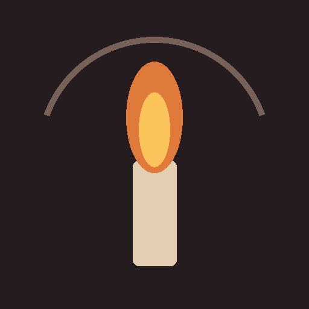
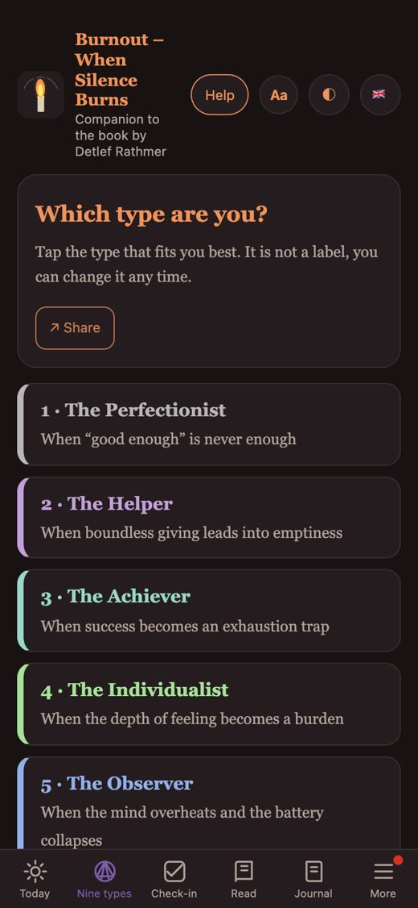
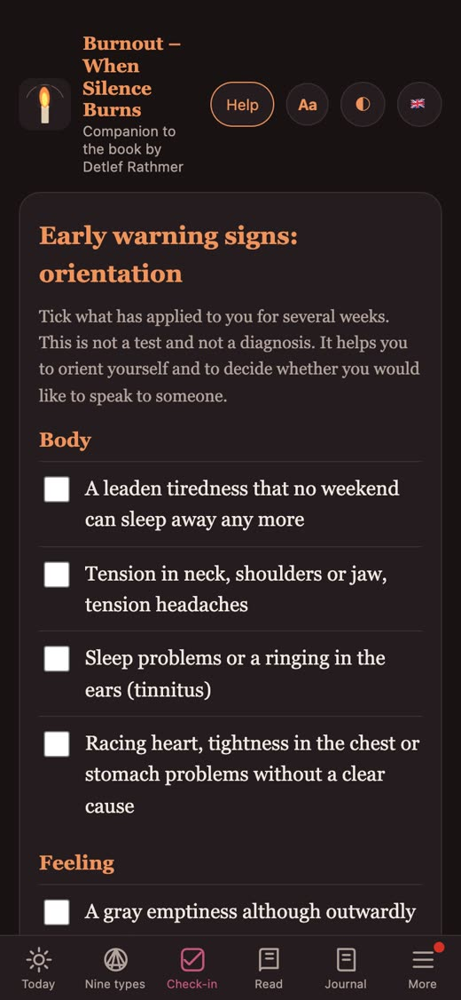
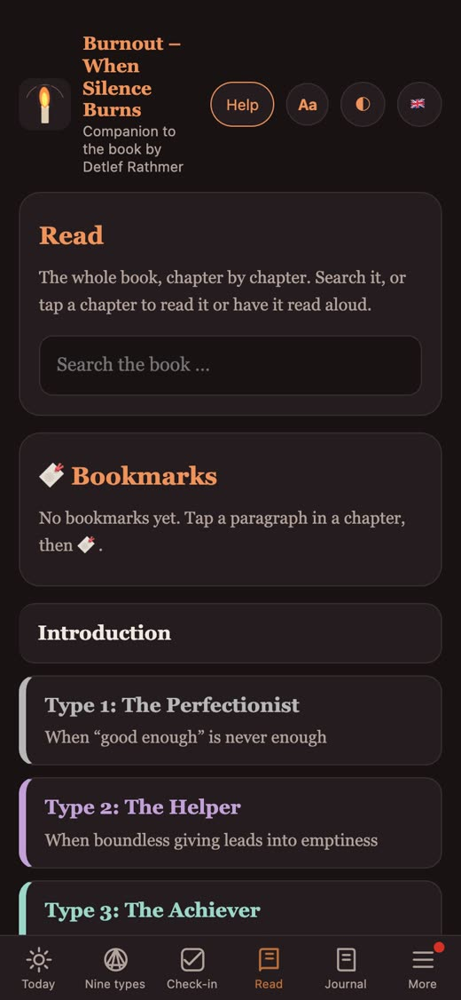
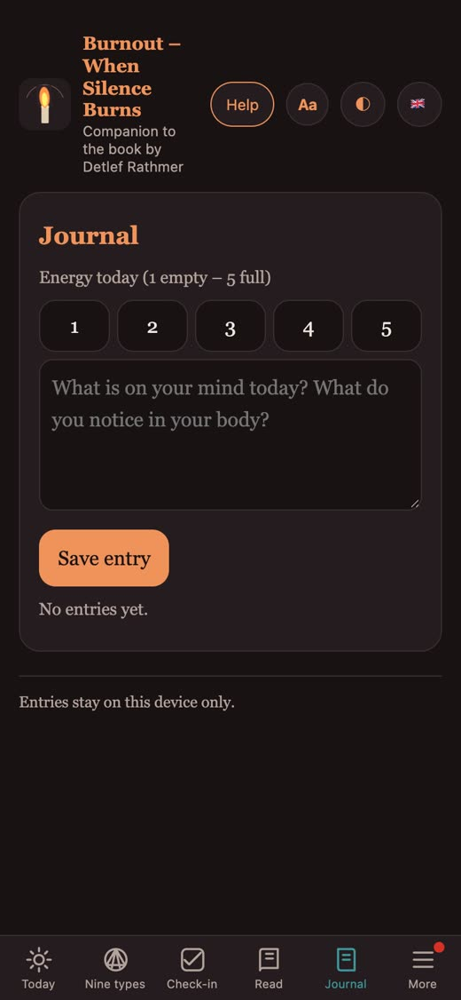

The app for the book

Burnout – When Silence Burns
Understanding burnout, type by type.
The book by Detlef Rathmer as an app: how does your type burn out, and what really nourishes it? Pattern, trap and path for all nine Enneagram types, an orientation on early warning signs, the whole book with search and a read-aloud function in the author’s voice (digitally voiced, with the author’s consent), and a journal that stays on your device. On your phone, in German, English and Spanish.
Buy the app · €9.99 View the free sample To the bookOne-time payment €9.99, no subscription. The sample is free, the rest is unlocked with your purchase. The app comes in German, English and Spanish: 🇩🇪 Deutsch · 🇬🇧 English · 🇪🇸 Español
The film about the app
90 seconds: how each type burns out and what the app offers.
Music: “Where Silence Used to Breathe” by Detlef Rathmer.
A look inside the app
This is how the app looks on a phone.




What the app offers
For each Enneagram type: how it burns out, the deep wound, the passion, the drive and the trap in burnout. Plus the stress line as an early warning system, the growth line, reflection questions, a small everyday exercise and an affirmation.
You tick what has applied to you for several weeks. The result comes without a score: not a test and not a diagnosis. If crisis thoughts come up, a help box with emergency numbers appears at once.
Every German chapter can be listened to in the voice of Detlef Rathmer, digitally voiced with the author’s consent. The reading follows the text paragraph by paragraph, you choose the speed and read along. The read-aloud function is made for the app, not as an audiobook. The English and Spanish chapters are read aloud by your phone’s own voice.
All chapters with search, bookmarks and read-aloud. Links lead between the type page, the check-in and the book text. Works offline, too.
Energy from 1 to 5 and a few lines. The entries stay only on your device.
A thought from the book on the start page, plus the weather, as in the other apps.
“Where Silence Used to Breathe” by Detlef Rathmer, to listen to under “More” and from “Today”.
Book and app
Two versions, each made for a different purpose.
Made for reading, as a paperback from BoD (German edition).
Contains the complete text of the book. It is also read aloud, digitally voiced with the author’s voice and with his consent. Plus features only an app can offer: check-in, journal, search and bookmarks.
The book behind the app
The author
 Detlef Rathmer
Detlef RathmerNon-fiction author, Enneagram expert, lecturer and coach. A naturopath since 2000, with a focus on classical homeopathy.
Note: The app offers suggestions for self-observation and orientation. It is not a diagnosis, not therapy and does not replace medical or psychotherapeutic help. If exhaustion persists, please see a doctor. In an acute crisis, call your local emergency number or a crisis line.